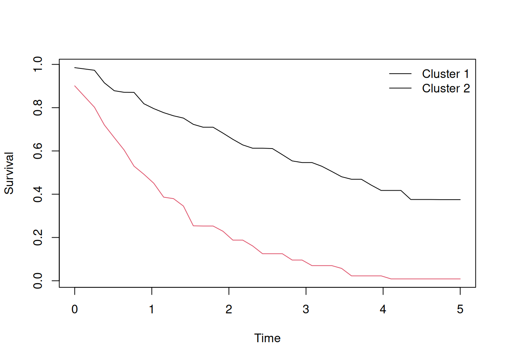

unsurv: Unsupervised Clustering of Individualized Survival Curves
PAM clustering on survival probability matrices with automatic K selection, monotonic enforcement, and plotting
Imad El Badisy · 2025-12-01
Survival analysis typically ends at the population level: a single estimated curve, or a hazard ratio summarizing the average effect of a covariate. But individualized survival curves, one per patient, open a richer question: can we identify subgroups of patients with similar prognosis trajectories, without ever labeling anyone in advance?
unsurv answers that question. It clusters individualized survival curves using Partitioning Around Medoids (PAM), with principled preprocessing choices (monotonic enforcement, weighted distances, automatic K selection) and a clean set of plotting helpers.
What is unsurv?
unsurv (v0.6.0) takes a matrix of survival probabilities (rows are subjects, columns are time points) and returns cluster assignments, medoid curves, and a silhouette diagnostic.
Install:
install.packages("unsurv")
The core idea
Suppose you have estimated individual survival curves \(S_i(t_1), \ldots, S_i(t_m)\) for \(n\) patients on a shared time grid \(t_1 < \cdots < t_m\) (from any model: Kaplan–Meier stratified by covariates, a Cox model, a random survival forest, or survdnn). Stack them into an \(n \times m\) matrix \(\mathbf{S}\) and pass it to unsurv().
Compute a weighted distance matrix (\(L_1\) or \(L_2\)) using trapezoidal weights by default, so time points in regions of faster change contribute more.
Run PAM on the distance matrix.
If \(K\) is unspecified, select the \(K \in \{2, \ldots, K_\text{max}\}\) that maximizes mean silhouette width.
Basic usage
suppressPackageStartupMessages(library(unsurv))# Simulate survival curves from two latent risk groupsset.seed(42)n <-100times <-seq(0, 5, length.out =40)grp <-sample(1:2, n, replace =TRUE)rates <-ifelse(grp ==1, 0.2, 0.8)S <-outer(rates, times, function(r, t) exp(-r * t))S <- S +matrix(rnorm(n *length(times), sd =0.02), nrow = n)# Cluster with automatic K selectionfit <-unsurv(S, times, K =NULL, K_max =6, seed =123)fit$K # selected number of clusters
[1] 2
table(fit$clusters) # cluster assignment per subject
1 2
44 56
fit$silhouette_mean # mean silhouette width at the selected K
[1] 0.9393843
Distance and weighting options
# L1 (Manhattan) distance: more robust to outlier curvesfit_l1 <-unsurv(S, times, K =2, distance ="L1")# Custom time weights: emphasize early time pointsw <-rev(seq_along(times))fit_w <-unsurv(S, times, K =2, weights = w /sum(w))
Monotonic enforcement and smoothing
Raw predicted survival curves from flexible models may not be strictly non-increasing. unsurv corrects this before clustering:
fit <-unsurv( S, times, K =NULL, K_max =6, seed =123,enforce_monotone =TRUE, # project each curve to isotonicsmooth_median_width =5# median filter of width 5 over time)
Predicting clusters for new subjects
# newdata: n_new x m matrix of survival curves for new patientspred <-predict(fit, newdata = S[1:5, ])pred
[1] 1 1 1 1 2
Plotting
plot(fit)

Figure 1: Cluster medoid curves, automatic K selection
Combining with a survival model
A natural pipeline is:
Fit individualized survival curves with a model of your choice (e.g., survdnn, rfsrc, Cox with spline terms).
Predict \(\hat{S}_i(t)\) on a common time grid.
Pass the resulting matrix to unsurv() to discover prognostic subgroups.
Use cluster membership as a stratification variable or as a phenotype to interrogate.
suppressPackageStartupMessages({library(survival); library(survdnn)})torch::torch_manual_seed(1)dnn_fit <-survdnn(Surv(time, status) ~ age + sex + ph.ecog + ph.karno, data = lung,hidden =c(64, 32), loss ="cox", epochs =100, verbose =FALSE)times_grid <-seq(0, 1000, by =25)S_hat <-as.matrix(predict(dnn_fit, newdata = lung, type ="survival", times = times_grid))clust <-unsurv(S_hat, times_grid, K =NULL, K_max =5, seed =1)table(clust$clusters)